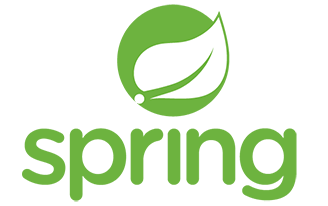

Skills
Ability is decided by one's own effort.JAVA
 객체지향언어/JVM/개발환경구축/자바언어의 특징 등 기초지식을 갖고있습니다.
객체지향언어/JVM/개발환경구축/자바언어의 특징 등 기초지식을 갖고있습니다.- JAVA를 기본으로 JSP, Spring을 통한 홈페이지 구축이 가능합니다.
- JAVA API 문서를 읽고 사용합니다.
#OOP, #JVM, #JSP, #spring, #JavaAPI
JSP
- 자바빈즈를 이용하여 다양한 로직처리를 합니다.
- JSP의 내장함수, 액션태그, JSTL을 이용하여 데이터와 사용자입력의 흐름을 제어합니다.
- JDBC 데이터베이스 연동이 가능합니다.
- 세션과 쿠키, request, response를 이용하여 데이터를 주고받습니다.
#Tomcat, #JSTL, #DAO, #DTO, #taglib, #JDBC

Spring Framework
- MVC 패턴을 이해하고 알맞게 사용하여 사이트를 구축합니다.
- Dependency Injection으로 객체를 주입하여 사용합니다.
- ViewResolver와 Tiles를 이해하고 활용합니다.
- spring 내에서 다양한 언어를 사용합니다.
#MVC, #DI, #MyBatis, #JS, #Ajax, #JSON

Java Script / JQuery
- 웹브라우저 상의 이벤트를 처리합니다.
- JQuery 이용하여 HTML 객체 조작을 합니다. (태그삽입, 속성변경, text입력 등)
- JQuery 이용하여 JS보다 간편한 이벤트처리가 가능합니다.
#JQuery, #AJax, #Node.js

Node.js
- npm 명령어로 필요한 라이브러리를 다운받아 사용합니다.
- express framework로 웹서버를 구축하고 router를 정의합니다.
- socket.io를 이용한 실시간 양방향 통신을 구현합니다.
- 파일 입,출력 및 Js객체배열/JSON를 자유롭게 사용합니다.
#express, #socketIO, #JSON
Data Base
- Oracle 데이터베이스를 사용합니다.
- slq문을 이용한 데이터 정의어, 데이터 조작어를 사용합니다.
#Oracle, #JDBC, #Mybatis, #DDL, #DML
Education
It's all prepared. All I need to do is move forward!
2019.10.29-2020.04.29 <글로벌 아이티 인재개발원>
웹기반 스마트콘텐츠 자바응용SW 전문가 양성과정 - 이수완료
Project
The future depends on what we do in the present.
01
펫시터를 연결해주는 사이트 'MEPET'
펫시터와 돌봄이 필요한 반려동물을 연결해주고 소통하는 사이트입니다.
주요기능 : 로그인/회원가입/게시판/반려동물정보관리/펫시터정보관리
펫시터로 등록된 유저가 홍보글을 올리는 게시판.
펫시터를 구하는 유저들에게 필요한 펫시터 정보를 게시판 제목단에 간략하게 넣은 게시판 형식의 페이지입니다. 사이트는 JSP를 이용하여 만들었고 Oracle DB와 JDBC API를 이용하여 데이터를 저장하고 가져옵니다.
View Details펫시터로 등록된 유저의 펫시터페이지.
펫시터 전용 마이페이지로 첫 화면 펫시터의 활동 점수가 보이도록 구현하였습니다. 유저들이 후기글을 남기면서 만족도 평가를 하는데, 만족도를 모두 더한 것이 총 포인트가 되고 총 포인트와 후기 갯수를 나눠 평점 제도를 만들었습니다. 그리고 평점을 토대로 상, 중, 하로 나누었습니다. 정보를 수정할 수있고, 내 펫시터 홍보글과 후기글을 볼 수 있는 버튼을 만들었습니다.
View Details관리자가 회원을 관리할 수 있는 관리자 전용 페이지.
관리자 전용 페이지를 만들어 게시글과 회원정보를 관리할 수 있도록 구현하였습니다. 그 중 회원을 관리하는 페이지의 코드와 화면입니다. 회원 정보를 list형식으로 뽑아왔고, 정보를 수정하거나 탈퇴를 진행할 수 있습니다.
View Details02
함께하는 알뜰한 소비 '반띵'
대용량의 상품들을 나누어 살 수있도록 소비자와 소비자를연결해주는 사이트입니다.
주요기능 : 카카오API 로그인/지도맵, Ajax/JSON을 이용한 데이터 입출력, 실시간채팅
지역과 검색어 설정 후 보이는 페이지와 채팅 페이지.
지역에서 위도와 경도를 뽑아 카카오 API를 이용하여 대략 적인 범위의 지도를 화면에 띄우고, 검색어로 DB에 접속하여 해당 검색어에 맞는 데이터에 있는 거래장소의 정확한 위도와 경도로 지도화면에 표시하였습니다. 채팅은 Jquery와 Ajax를 이용해 채팅 변경사항을 계속 Json파일에 저장하고 채팅창을 초단위로 리로드하여 사용자간 실시간으로 채팅할 수 있도록 구현하였습니다.
View DetailsOracle DataBase와 Mybatis의 사용.
사이트 개발 시 Oracle DataBase를 사용하였고 데이터를 저장하였고, Mybatis를 이용하여 spring MVC 패턴 중 Model 부분에서 데이터베이스의 데이터를 update,insert,select 하였습니다.
View Details참여자와 유저정보를 띄우는 로직.
채팅방 입장 시, 참여하는 참여자들의 닉네임을 화면에 띄우고, 참여자의 '정보보기' 버튼을 누르면 유저정보 팝업창을 띄우는 로직입니다. 참여자가 입장하고 퇴장하는 것이 실시간으로 바뀌어야하는 참여자 정보는 Ajax와 JQuery를 이용하여 데이터가 변경될 때마다 저장하고, 지정한 초마다 저장된 데이터가 화면에 리로드 되도록 구현하였습니다.
View Details03
Node.js와 Socket.io를 이용한 실시간 채팅
Namespase를 이용하여 만든 사용자들의 실시간 채팅기능입니다.
주요기능 : 실시간 채팅, 지난채팅 보기, 입/퇴장 알림, 강퇴기능, 접속자 정보
채팅방 개설 시, 유저의 첫 입장 시.
채팅방 개설 시, 유저의 첫 입장 시 실행되는 메소드들을 모아 function으로 만들엇습니다. socket은 페이지 이동시에 계속해서 변하기때문에 채팅에 참여하는 유저가 페이지 이동 후 다시 입장하여도 기록이 그대로 남아있도록 닉네임으로 유저를 구분하였습니다.
View Details실시간 채팅의 주요 기능이 담긴 코드입니다. 그 중 강퇴기능은 방장에게만 주어지는 기능으로 강퇴를 누르면 대상 유저의 소켓id에게 알림메세지를 보낸 후 페이지를 이동시키고, 채팅정보가 저장된 json파일에서 유저의 정보를 삭제합니다.
View Details채팅 참여 유저가 채팅방에 재입장 했을 경우, 채팅내역을 리로드 해주는 로직입니다. 메세지 저장 시 닉네임,내용,시간을 함께 저장하였고 유저 재입장 시, 채팅방의 모든 채팅내용을 리로드하는 것이 아니라 유저의 첫 입장 시간 이후의 메세지들부터 리로드 하도록 코딩하였습니다. (유저 첫 입장 전 메세지는 볼 수 없도록)
View Details